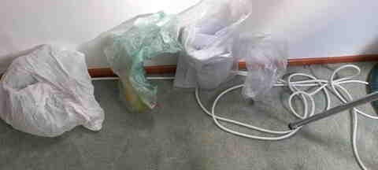

Opdrachten
No impact week
Maandag
Ik verbruik 2.8 aardbollen. Dit houdt in dat als iedereen zoals ik zou leven, zouden we 2.8 aardbollen nodig hebben. Het is wel minder dan het gemiddelde van Nederland, namelijk 3,3. Ik denk dat het komt doordat ik geen auto of scooter bezit, dus geen benzine verbruik. Bij mij thuis recyclen we ook in 4 categorieën: pmd, papier, gft en restafval. Maar het is nog steeds te veel.
Enige wat ik dit week per se moet kopen zijn boodschappen. Ik ga proberen om op te letten hoe duurzaam ze zijn voor het klimaat, dus bijvoorbeeld letten op waar het product gemaakt of gekweekt is.
Het was voor mij niet zo moeilijk om minder te gaan consumeren. Ik ben al een lange tijd aan het sparen voor mijn rijbewijs, dus ik ben al gewend om niet te veel geld uitgeven.
Wat ik wel moeilijk vindt aan minder consumeren is denk ik wel eten en drinken. Vaak als ik buiten ben met mijn vrienden en dan heb ik bijvoorbeeld dorst, gaan we wel vaak langs de supermarkt om iets te kopen. Maar ik heb een oplossing gevonden. In mijn wijk hebben we van die dunea openbare tapkranen met water, waar ik vandaag veel gebruik van heb gemaakt.
Dinsdag
Het is voor mij niet zo moeilijk om geen afval te maken aangezien ik zo min mogelijk moet consumeren. Ik heb al niks gekocht gedurende de 2 dagen. Meestal eet ik thuis, dus het gaat ook geen probleem zijn om dat deze week te doen.
Plastic flessen gooi ik eigenlijk nooit weg, want ik gebruik ze altijd opnieuw. Meestal raak ik ze gewoon op een manier kwijt en dan pas koop ik een nieuwe.
Het was voor mij niet zo moeilijk om minder te gaan consumeren. Ik ben al een lange tijd aan het sparen voor mijn rijbewijs, dus ik ben al gewend om niet te veel geld uitgeven.
Wat ik wel moeilijk vindt aan minder consumeren is denk ik wel eten en drinken. Vaak als ik buiten ben met mijn vrienden en dan heb ik bijvoorbeeld dorst, gaan we wel vaak langs de supermarkt om iets te kopen. Maar ik heb een oplossing gevonden. In mijn wijk hebben we van die dunea openbare tapkranen met water, waar ik vandaag veel gebruik van heb gemaakt.
Wat heb ik vandaag gegeten?
Ontbijt. Twee boterhammen met pindakaas gegeten en een kopje tee gedronken. Ik heb ook twee boterhammen meegenomen naar school en een flesje water. Ik heb een broodtrommel en een hergebruikbare fles gebruikt.
Lunch. Tomatensoep en een boterham met jam.
Avondeten. Kip met rijst en een groentesalade.
Woensdag
Mijn voedselafdruk is 1.1 hectare en mijn waterafdruk is 2280 liter, wat iets te veel mileu-impact is. Om dat te verminderen heb ik besloten om voor mezelf en mijn gezin een vegetarisch gerecht te maken voor avondeten. Ik heb gekozen om roerbakrijst met paprika, broccoli en gebakken ei. Ik had daarvoor wel eieren moeten kopen in de supermarkt, want die waren op. Maar het heeft geen afval gemaakt, want ik heb ze niet allemaal gebruikt (ten minste niet deze week). Ik heb voor dit gerecht gekozen, want ik vind gebakken eieren best wel lekker.
Om heel eerlijk te zijn vond ik het uiteindelijk niet lekker smaken. Het zal wel aan mijn kook vaardigheden liggen.
Ik vond deze opdracht wel uitdagend, want ik eet letterlijk elke dag twee keer per dag vlees, dus nu opeens vegetarisch gaan eten is wel iets heel erg ongewoons voor me, laat staan veganistisch. De rest van de producten die ik voor deze maaltijd had gebruikt hadden we al in huis, dus ik ben niet langs een boerenmarkt geweest om daar dingen te kopen. Ik heb wel ondergezocht waar alle gebruikte producten gekweekt of gemaakt worden. Paprika wordt in Midden-Amerika gekweekt, broccoli in Spanje, en rijst wordt in India verbouwd. Alle producten behalve broccoli worden van verre landen geïmporteerd naar Nederland. Uiteindelijk bleek het dus alsnog dat ik niet zo duurzaam gegeten heb vandaag.
Donderdag
Bij mij thuis gebruiken we jaarlijks ongeveer 3500 kWh elektriciteit, wat eigenlijk best wel schokkend nieuws voor me was, aangezien gemiddelde Nederlandse huishouden maar 2500 kWh gebruikt. Maar we zijn wel met 4 mensen in huis en mijn vader werkt nog steeds vaak online.
We hebben 6 kamers in huis, inclusief huiskamer. In elke kamer hebben we lampen. We hebben een tv, koelkast, digitale klok, radio en in totaal 4 laptops. Iedereen heeft een telefoon die natuurlijk op moet worden geladen en ik heb nog een extra beeldscherm voor mijn laptop, want ik vind dat mijn laptopscherm iets te klein is.
Eerste twee dingen waarvan ik de stekker uit het stopcontact uit heb getrokken waren mijn beeldscherm, want die is eigenlijk volledig onnodig en de digitale klok, want we hebben ook gewoon een normale klok op de muur hangen. Verder lette ik vanaf vandaag heel goed op dat alle lichte uitstaan in kamers die niet worden gebruikt. Ik heb een slechte gewoonte om de licht in mijn kamer aan te laten terwijl ik daar niet ben, soms staat het zelf makkelijk de hele nacht aan.
Aangezien het nog best warm is buiten, ook s nachts, hebben we de kachel nog niet aangezet. Maar meestal staat het op 19 graden.
Vrijdag
In mijn huishouden gebruiken we ongeveer 400 liter water per dag, wat al helemaal schokkend is, want een gemiddeld huishouden in Nederland gebruikt maar 134 liter per dag.
Ik ga vandaag water waarschijnlijk allen thuis gebruiken voor onder anderen: douchen, eten en drinken, afwassen. Ik denk dat ik vandaag ongeveer 100 liter water ga gebruiken al is dat best moeilijk voor me om in te schatten.
Minder water gebruiken is mij niet zo goed gelukt. Enige verandering die ik uit kon voeren is minder land in de douche staan en ik heb in plaats van warm water, lauw water gebruikt. Ik zou eigenlijk niet weten hoe ik minder water zou moeten gebruiken met bijvoorbeeld eten en drinken. Als ik dorst heb, ga ik wel gewoon een glaasje water drinken.
Reflectie no impact week
Ik vind dat dat minder consumeren mij heel erg goed gelukt is. Ik persoonlijk heb gedurende deze hele week maar twee dingen gekocht, eieren voor het vegetarische gerecht en een blikje energie tijdens werk, want ik was wel moe.
Minder afval is ook redelijk goed gegaan, maar ik denk dat dat vooral te maken heeft met het feit, dat ik ook veel minder ging consumeren. Waar ik eigenlijk wel erg trots op ben is dat ik deze week helemaal geen plastic afval gemaakt heb.
Vanaf woensdag begon het wel moeilijker voor me te worden. Ten eerste vegetarisch eten, waar ik totaal niet aan ben gewend, smaakte echt afschuwelijk. Om eerlijk te zijn heb ik veganistisch eten niet eens geprobeerd. En op vrijdag heb ik toch wel een beetje vlees gegeten, want ik kon mezelf niet meer inhouden. Ook producten kopen op de boerenmarkt was aanzienlijk duurder dan bij een supermarkt en de aangeboden voorraad was veel minder. Ik denk dat de voedsel onderdeel het moeilijkst was voor me van de no impact week.
Minder energie gebruiken ging volgens mij best goed. Het is wel moeilijk om te zeggen, want ik heb niet echt cijfers om te zien hoeveel minder elasticiteit ik de laatste twee dagen gebruikt had, dan wat ik normaal gebruik. Het was voor mij wel even wenen om met het klein scherm van mijn laptop te werken in plaats van het grote beeldscherm dat ik heb.
Minder water gebruiken was voor me de tweede moeilijkste onderdeel van de no impact week. Het was niet zo fijn om minder lang te douchen en kouder water gebruiken. Verder wist ik eigenlijk niet zo goed hoe ik minder water moest gebruiken. Voor dit onderdeel geldt eigenlijk een beetje hetzelfde als voor het energieonderdeel, ik weet niet precies hoeveel minder water ik nou op een dag gebruikt heb.
In het algemeen vond ik het niet zo slech zijn gegaan, wel een beetje jammer dat ik niet vol heb kunnen houden met vegetarisch eten.
Week 2

Waarneming 1
Dit is een fietspad in mijn buurt, er staat duidelijk en bord die aangeeft dat het een fietspad is, maar toch lopen daar heel vaak mensen terwijl er gewoon een voetgangerpad rechts is.

Waarneming 2
Met de groene pijl heb ik aangegeven hoe je als een fietser dit bocht moet nemen. Met de twee rode pijlen heb ik aangegeven hoe sommige mensen dit bocht nemen. Ik denk dat mensen deze soort van olefantenpaadje voor fietsers bedacht hebben is omdat het sneller is. Deze waarneming is subjectief.

Waarneming 3
Als je van links komt en dan naar links af wil slaan, moet je in dat vakje gaan staan en wachten tot dat mensen die waar ik sta groen krijgen. Het probleem is dat er niet altijd iemand is waar ik sta, dus moet je omrijden hoe ik met de groene pijl aangegeven heb. Dat is niet zo handig. Deze waarneming is subjectief, want misschien vinden sommige mensen het wel handig.

Waarneming 4
Er is een fietspad links te zien. Dus je kan naar de plek waar ik sta wel komen van de tegengestelde richting, maar je kan eigenlijk niet terug, want er is geen fietspad de richting op naar waar ik kijk. Je moet dan behoorlijk wat omrijden. Deze waarneming is objectief.

Waarneming 5
Er is een fietspad en een voetgangerpad, maar toch loopt er iemand over het fietspad. Ik denk dat het komt doordat deze voetpad heel glad is. Het is een subjectieve waarneming.

.png)
Waarneming 6
Op deze plek heb ik twee dingen opgemerkt. Ten eerste dat er van die go fietsen staan op een heel erg afgelegen plek, en de tweede waarneming is dat er geen voetgangerspad is, dus moeten mensen via het fietspad gaan lopen. Waarom de fietsen daar staan zou ik geen idee hebben. Ik denk dat daar geen voetgangerspad is alleen omdat er iets fout gegaan is met het inplannen, want de voetganger pad, stopt een beetje uit het niets en het fietspad neemt bijna de hele ruimte in tussen de grond dat van de overheid is en de grond van particuliere eigenaren. Deze waarneming is subjectief.

Waarneming 7
Op deze foto is een fietspad te zien die uiteindelijk een deel van de autoweg wordt, dus de fietsers moeten op een manier op de weg afrijden. Met de groene pijl heb ik laten zien hoe het bedacht zou moeten werken en met de rode pijl heb ik de route laten zien hoe de meeste fietsers het doen. Ik denk dat mensen voor die route kiezen omdat de bocht veel minder scherp is, dus ook veiliger. Deze waarneming is subjectief.

Waarneming 8
Mensen die iets weg willen gooien in de container moeten dat doen terwijl ze op het fietspad staan. Volgens mij was die plek voor de containers maar tijdelijk gekozen toen een deel van de wijk vernieuwd moest worden, maar dat was wel nog voor corona en de containers staan daar nog steeds. Deze waarneming is subjectief.

Waarneming 9
De fietsers moeten voorgang geven aan de automobilisten, terwijl er letterlijk 1 meter verder een zebrapad is, waar de atous voorgang aan voetgangers moeten geven. Het lijkt mij veel logischer dat autos dan aan beiden groepen voorgang moeten geven. Ik heb wel een theorie van waarom het zo is gemaakt. Op deze plek in het bijzondere komen fietser wel het vaakst voor van de drie groepen. Het zou zo kunnen zijn dat autos dan heel lang moeten wachten voordat alle fietsers over hebben gestoken, terwijl omdat er niet zo veel autos op die plek komen, moeten fietsers vaak maar een paar secondes wachten voordat ze kunnen oversteken. Deze waarneming is subjectief.

Waarneming 10
Het knopje voor fietsers op deze foto is nutteloos, want je mag hier allen naar rechts en fietsers hoeven geen groen licht te hebben om dat te doen, plus op dat plek kan je gewoon groen hebben terwijl de voetgangers ook groen hebben, er is helemaal geen fiets stoplicht, dus je krijgt groen wanneer de autos groen krijgen, en fiets stoplicht knopjes zijn sowieso al een illusie, want er zijn in meeste plekken gewoon sensoren in de grond die een signaal naar de stoplicht stuurt wanneer je over de sensor heen hebt gereden (niet overall zo). Deze waarneming is subjecrief.

Waarneming 11
Mensen laten eten op de tafel liggen en dan komen de vogels. Deze waarneming is objectief.
Betoog
World War I or the First World War, often abbreviated as WWI or WW1, was a major global conflict that began on 28 July 1914 and ended on 11 November 1918. Referred to by contemporaries as the "Great War", its belligerents included much of Europe, the Russian Empire, the United States, and the Ottoman Empire, with fighting taking place across Europe, the Middle East, Africa and parts of Asia. New technology, including the recent invention of the airplane, trench warfare, and especially chemical weapons made it one of the deadliest conflicts in history. An estimated 9 million soldiers died in combat, with another 5 million civilian deaths as a result of military actions, hunger and disease.[2] Millions more died in genocides within the Ottoman Empire and the 1918 influenza pandemic, which was exacerbated by the movement of combatants during the war.[3][4] By 1914, the European great powers were divided between the Triple Entente, comprising France, Russia, and Britain, and the Triple Alliance, containing Germany, Austria-Hungary, and Italy. Tensions in the Balkans came to a head on 28 June 1914 following the assassination of Archduke Franz Ferdinand, the Austro-Hungarian heir, by Gavrilo Princip, a Bosnian Serb. Austria-Hungary blamed Serbia, which led to the July Crisis, an unsuccessful attempt to avoid conflict through diplomacy. Russia came to Serbia's defence following Austria-Hungary's declaration of war on the latter on 28 July, and by 4 August, the system of alliances drew in Germany, France, and Britain, along with their respective colonies, although Italy remained neutral. In November 1914 the Ottoman Empire, Germany, and Austria-Hungary formed the Central Powers, while in April 1915, Italy joined Britain, France, Russia and Serbia as the Allies of World War I. Facing a war on two fronts, German strategy in 1914 was to concentrate its forces on defeating France in six weeks before moving them to the Eastern Front and doing the same to Russia.[5] However, the German offensive in France failed to achieve this and by the end of 1914, the two sides faced each other along the Western Front, a continuous series of trench lines stretching from the English Channel to Switzerland that changed little until 1917. By contrast, the Eastern Front was far more fluid, with Austria-Hungary and Russia gaining, then losing large swathes of territory. Other significant theatres included the Middle Eastern Theatre, the Italian Front, and the Balkans Theatre, drawing Bulgaria, Romania, and Greece into the war. By the end of 1915, both Russia and Austria-Hungary had suffered enormous casualties in the East, while Allied offensives against the Ottomans and on the Western Front ended in failure. A major German attack on Verdun in 1916 and a British offensive on the Somme also achieved little other than large numbers of casualties on both sides, while a Russian offensive in the East ground to a halt after some initial success. By early 1917, Russia was on the verge of revolution while the failure of the 1917 Nivelle Offensive and equally costly British attacks in Flanders meant by now all sides were increasingly short of manpower and subject to economic stress. Shortages caused by the Allied naval blockade had led Germany to initiate unrestricted submarine warfare in early 1917, bringing the previously-neutral United States into the war on 6 April 1917. In Russia, the Bolsheviks seized power in the 1917 October Revolution and exited the war with the March 1918 Treaty of Brest-Litovsk, freeing up a large number of German troops. By transferring these to the Western Front, the German General Staff hoped to win a decisive victory before the arrival of significant American reinforcements and took the offensive in March 1918. Despite initial success, it was soon halted by heavy casualties and ferocious defence; in August, the Allies launched the Hundred Days Offensive and although the Imperial German Army continued to fight hard, it could only slow the advance, not stop it.[6] Towards the end of 1918, the Central Powers began to collapse; Bulgaria signed an armistice on 29 September, followed by the Ottomans on 31 October, then Austria-Hungary on 3 November. Isolated, facing the German Revolution at home and a military on the verge of mutiny, Kaiser Wilhelm abdicated on 9 November, and the new German government signed the Armistice of 11 November 1918, bringing the conflict to a close. The Paris Peace Conference of 1919–1920 imposed various settlements on the defeated powers, with the best-known of these being the Treaty of Versailles. The dissolution of the Russian, German, Ottoman, and Austro-Hungarian empires led to numerous uprisings and the creation of independent states, including Poland, Czechoslovakia, and Yugoslavia. For reasons that are still debated, failure to manage the instability that resulted from this upheaval during the interwar period ended with the outbreak of World War II in September 1939.World War I or the First World War, often abbreviated as WWI or WW1, was a major global conflict that began on 28 July 1914 and ended on 11 November 1918. Referred to by contemporaries as the "Great War", its belligerents included much of Europe, the Russian Empire, the United States, and the Ottoman Empire, with fighting taking place across Europe, the Middle East, Africa and parts of Asia. New technology, including the recent invention of the airplane, trench warfare, and especially chemical weapons made it one of the deadliest conflicts in history. An estimated 9 million soldiers died in combat, with another 5 million civilian deaths as a result of military actions, hunger and disease.[2] Millions more died in genocides within the Ottoman Empire and the 1918 influenza pandemic, which was exacerbated by the movement of combatants during the war.[3][4] By 1914, the European great powers were divided between the Triple Entente, comprising France, Russia, and Britain, and the Triple Alliance, containing Germany, Austria-Hungary, and Italy. Tensions in the Balkans came to a head on 28 June 1914 following the assassination of Archduke Franz Ferdinand, the Austro-Hungarian heir, by Gavrilo Princip, a Bosnian Serb. Austria-Hungary blamed Serbia, which led to the July Crisis, an unsuccessful attempt to avoid conflict through diplomacy. Russia came to Serbia's defence following Austria-Hungary's declaration of war on the latter on 28 July, and by 4 August, the system of alliances drew in Germany, France, and Britain, along with their respective colonies, although Italy remained neutral. In November 1914 the Ottoman Empire, Germany, and Austria-Hungary formed the Central Powers, while in April 1915, Italy joined Britain, France, Russia and Serbia as the Allies of World War I. Facing a war on two fronts, German strategy in 1914 was to concentrate its forces on defeating France in six weeks before moving them to the Eastern Front and doing the same to Russia.[5] However, the German offensive in France failed to achieve this and by the end of 1914, the two sides faced each other along the Western Front, a continuous series of trench lines stretching from the English Channel to Switzerland that changed little until 1917. By contrast, the Eastern Front was far more fluid, with Austria-Hungary and Russia gaining, then losing large swathes of territory. Other significant theatres included the Middle Eastern Theatre, the Italian Front, and the Balkans Theatre, drawing Bulgaria, Romania, and Greece into the war. By the end of 1915, both Russia and Austria-Hungary had suffered enormous casualties in the East, while Allied offensives against the Ottomans and on the Western Front ended in failure. A major German attack on Verdun in 1916 and a British offensive on the Somme also achieved little other than large numbers of casualties on both sides, while a Russian offensive in the East ground to a halt after some initial success. By early 1917, Russia was on the verge of revolution while the failure of the 1917 Nivelle Offensive and equally costly British attacks in Flanders meant by now all sides were increasingly short of manpower and subject to economic stress. Shortages caused by the Allied naval blockade had led Germany to initiate unrestricted submarine warfare in early 1917, bringing the previously-neutral United States into the war on 6 April 1917. In Russia, the Bolsheviks seized power in the 1917 October Revolution and exited the war with the March 1918 Treaty of Brest-Litovsk, freeing up a large number of German troops. By transferring these to the Western Front, the German General Staff hoped to win a decisive victory before the arrival of significant American reinforcements and took the offensive in March 1918. Despite initial success, it was soon halted by heavy casualties and ferocious defence; in August, the Allies launched the Hundred Days Offensive and although the Imperial German Army continued to fight hard, it could only slow the advance, not stop it.[6] Towards the end of 1918, the Central Powers began to collapse; Bulgaria signed an armistice on 29 September, followed by the Ottomans on 31 October, then Austria-Hungary on 3 November. Isolated, facing the German Revolution at home and a military on the verge of mutiny, Kaiser Wilhelm abdicated on 9 November, and the new German government signed the Armistice of 11 November 1918, bringing the conflict to a close. The Paris Peace Conference of 1919–1920 imposed various settlements on the defeated powers, with the best-known of these being the Treaty of Versailles. The dissolution of the Russian, German, Ottoman, and Austro-Hungarian empires led to numerous uprisings and the creation of independent states, including Poland, Czechoslovakia, and Yugoslavia. For reasons that are still debated, failure to manage the instability that resulted from this upheaval during the interwar period ended with the outbreak of World War II in September 1939.World War I or the First World War, often abbreviated as WWI or WW1, was a major global conflict that began on 28 July 1914 and ended on 11 November 1918. Referred to by contemporaries as the "Great War", its belligerents included much of Europe, the Russian Empire, the United States, and the Ottoman Empire, with fighting taking place across Europe, the Middle East, Africa and parts of Asia. New technology, including the recent invention of the airplane, trench warfare, and especially chemical weapons made it one of the deadliest conflicts in history. An estimated 9 million soldiers died in combat, with another 5 million civilian deaths as a result of military actions, hunger and disease.[2] Millions more died in genocides within the Ottoman Empire and the 1918 influenza pandemic, which was exacerbated by the movement of combatants during the war.[3][4] By 1914, the European great powers were divided between the Triple Entente, comprising France, Russia, and Britain, and the Triple Alliance, containing Germany, Austria-Hungary, and Italy. Tensions in the Balkans came to a head on 28 June 1914 following the assassination of Archduke Franz Ferdinand, the Austro-Hungarian heir, by Gavrilo Princip, a Bosnian Serb. Austria-Hungary blamed Serbia, which led to the July Crisis, an unsuccessful attempt to avoid conflict through diplomacy. Russia came to Serbia's defence following Austria-Hungary's declaration of war on the latter on 28 July, and by 4 August, the system of alliances drew in Germany, France, and Britain, along with their respective colonies, although Italy remained neutral. In November 1914 the Ottoman Empire, Germany, and Austria-Hungary formed the Central Powers, while in April 1915, Italy joined Britain, France, Russia and Serbia as the Allies of World War I. Facing a war on two fronts, German strategy in 1914 was to concentrate its forces on defeating France in six weeks before moving them to the Eastern Front and doing the same to Russia.[5] However, the German offensive in France failed to achieve this and by the end of 1914, the two sides faced each other along the Western Front, a continuous series of trench lines stretching from the English Channel to Switzerland that changed little until 1917. By contrast, the Eastern Front was far more fluid, with Austria-Hungary and Russia gaining, then losing large swathes of territory. Other significant theatres included the Middle Eastern Theatre, the Italian Front, and the Balkans Theatre, drawing Bulgaria, Romania, and Greece into the war. By the end of 1915, both Russia and Austria-Hungary had suffered enormous casualties in the East, while Allied offensives against the Ottomans and on the Western Front ended in failure. A major German attack on Verdun in 1916 and a British offensive on the Somme also achieved little other than large numbers of casualties on both sides, while a Russian offensive in the East ground to a halt after some initial success. By early 1917, Russia was on the verge of revolution while the failure of the 1917 Nivelle Offensive and equally costly British attacks in Flanders meant by now all sides were increasingly short of manpower and subject to economic stress. Shortages caused by the Allied naval blockade had led Germany to initiate unrestricted submarine warfare in early 1917, bringing the previously-neutral United States into the war on 6 April 1917. In Russia, the Bolsheviks seized power in the 1917 October Revolution and exited the war with the March 1918 Treaty of Brest-Litovsk, freeing up a large number of German troops. By transferring these to the Western Front, the German General Staff hoped to win a decisive victory before the arrival of significant American reinforcements and took the offensive in March 1918. Despite initial success, it was soon halted by heavy casualties and ferocious defence; in August, the Allies launched the Hundred Days Offensive and although the Imperial German Army continued to fight hard, it could only slow the advance, not stop it.[6] Towards the end of 1918, the Central Powers began to collapse; Bulgaria signed an armistice on 29 September, followed by the Ottomans on 31 October, then Austria-Hungary on 3 November. Isolated, facing the German Revolution at home and a military on the verge of mutiny, Kaiser Wilhelm abdicated on 9 November, and the new German government signed the Armistice of 11 November 1918, bringing the conflict to a close. The Paris Peace Conference of 1919–1920 imposed various settlements on the defeated powers, with the best-known of these being the Treaty of Versailles. The dissolution of the Russian, German, Ottoman, and Austro-Hungarian empires led to numerous uprisings and the creation of independent states, including Poland, Czechoslovakia, and Yugoslavia. For reasons that are still debated, failure to manage the instability that resulted from this upheaval during the interwar period ended with the outbreak of World War II in September 1939.World War I or the First World War, often abbreviated as WWI or WW1, was a major global conflict that began on 28 July 1914 and ended on 11 November 1918. Referred to by contemporaries as the "Great War", its belligerents included much of Europe, the Russian Empire, the United States, and the Ottoman Empire, with fighting taking place across Europe, the Middle East, Africa and parts of Asia. New technology, including the recent invention of the airplane, trench warfare, and especially chemical weapons made it one of the deadliest conflicts in history. An estimated 9 million soldiers died in combat, with another 5 million civilian deaths as a result of military actions, hunger and disease.[2] Millions more died in genocides within the Ottoman Empire and the 1918 influenza pandemic, which was exacerbated by the movement of combatants during the war.[3][4] By 1914, the European great powers were divided between the Triple Entente, comprising France, Russia, and Britain, and the Triple Alliance, containing Germany, Austria-Hungary, and Italy. Tensions in the Balkans came to a head on 28 June 1914 following the assassination of Archduke Franz Ferdinand, the Austro-Hungarian heir, by Gavrilo Princip, a Bosnian Serb. Austria-Hungary blamed Serbia, which led to the July Crisis, an unsuccessful attempt to avoid conflict through diplomacy. Russia came to Serbia's defence following Austria-Hungary's declaration of war on the latter on 28 July, and by 4 August, the system of alliances drew in Germany, France, and Britain, along with their respective colonies, although Italy remained neutral. In November 1914 the Ottoman Empire, Germany, and Austria-Hungary formed the Central Powers, while in April 1915, Italy joined Britain, France, Russia and Serbia as the Allies of World War I. Facing a war on two fronts, German strategy in 1914 was to concentrate its forces on defeating France in six weeks before moving them to the Eastern Front and doing the same to Russia.[5] However, the German offensive in France failed to achieve this and by the end of 1914, the two sides faced each other along the Western Front, a continuous series of trench lines stretching from the English Channel to Switzerland that changed little until 1917. By contrast, the Eastern Front was far more fluid, with Austria-Hungary and Russia gaining, then losing large swathes of territory. Other significant theatres included the Middle Eastern Theatre, the Italian Front, and the Balkans Theatre, drawing Bulgaria, Romania, and Greece into the war. By the end of 1915, both Russia and Austria-Hungary had suffered enormous casualties in the East, while Allied offensives against the Ottomans and on the Western Front ended in failure. A major German attack on Verdun in 1916 and a British offensive on the Somme also achieved little other than large numbers of casualties on both sides, while a Russian offensive in the East ground to a halt after some initial success. By early 1917, Russia was on the verge of revolution while the failure of the 1917 Nivelle Offensive and equally costly British attacks in Flanders meant by now all sides were increasingly short of manpower and subject to economic stress. Shortages caused by the Allied naval blockade had led Germany to initiate unrestricted submarine warfare in early 1917, bringing the previously-neutral United States into the war on 6 April 1917. In Russia, the Bolsheviks seized power in the 1917 October Revolution and exited the war with the March 1918 Treaty of Brest-Litovsk, freeing up a large number of German troops. By transferring these to the Western Front, the German General Staff hoped to win a decisive victory before the arrival of significant American reinforcements and took the offensive in March 1918. Despite initial success, it was soon halted by heavy casualties and ferocious defence; in August, the Allies launched the Hundred Days Offensive and although the Imperial German Army continued to fight hard, it could only slow the advance, not stop it.[6] Towards the end of 1918, the Central Powers began to collapse; Bulgaria signed an armistice on 29 September, followed by the Ottomans on 31 October, then Austria-Hungary on 3 November. Isolated, facing the German Revolution at home and a military on the verge of mutiny, Kaiser Wilhelm abdicated on 9 November, and the new German government signed the Armistice of 11 November 1918, bringing the conflict to a close. The Paris Peace Conference of 1919–1920 imposed various settlements on the defeated powers, with the best-known of these being the Treaty of Versailles. The dissolution of the Russian, German, Ottoman, and Austro-Hungarian empires led to numerous uprisings and the creation of independent states, including Poland, Czechoslovakia, and Yugoslavia. For reasons that are still debated, failure to manage the instability that resulted from this upheaval during the interwar period ended with the outbreak of World War II in September 1939.